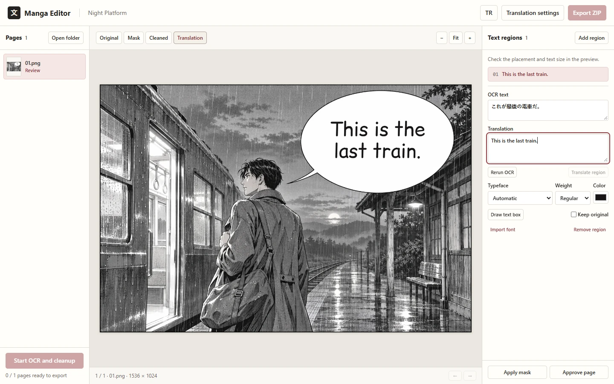
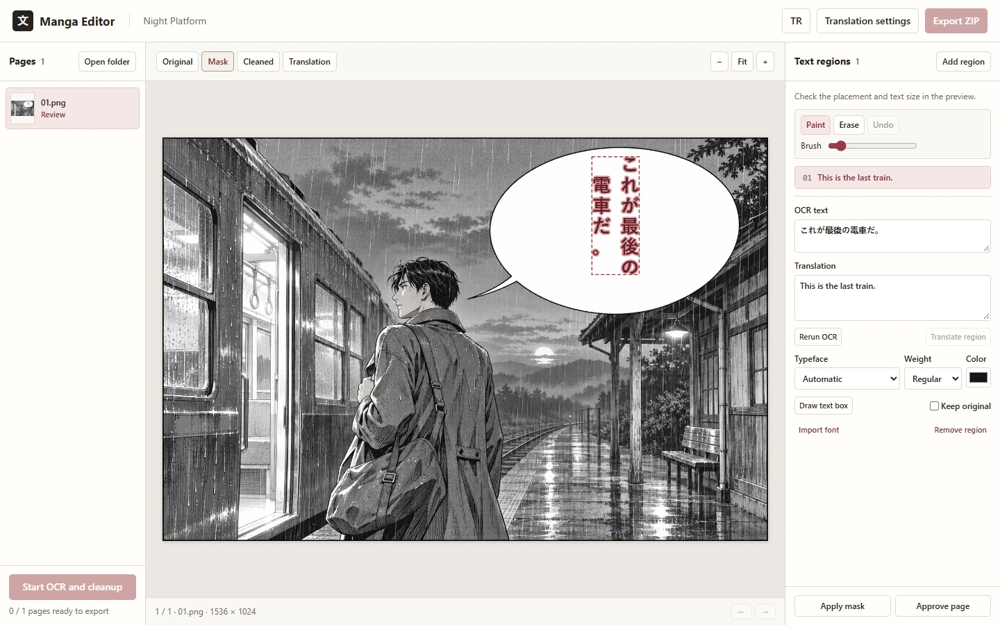

Scan and translate
OCR reads Japanese text from PNG, JPG and WebP pages. Use Google Translate, DeepL, LibreTranslate, Ollama or an OpenAI-compatible service.
Open a chapter folder, clean the speech bubbles, and check the lettering. Export your approved pages as full-resolution PNGs in one ZIP.

OCR reads Japanese text from PNG, JPG and WebP pages. Use Google Translate, DeepL, LibreTranslate, Ollama or an OpenAI-compatible service.
Compare the original, mask and cleaned page. Review reconstructed artwork and import a font to match the lettering.
Check line breaks and placement, then export the approved pages as full-resolution PNGs in one ZIP.


This is the last train.
The public Windows download is pending release.
OCR and cleanup run on your computer. An external translation service receives the detected text and, if supported, the series context you enter.
You can enter translations manually or connect a supported provider. Depending on the provider, you may need an API key or a local model.